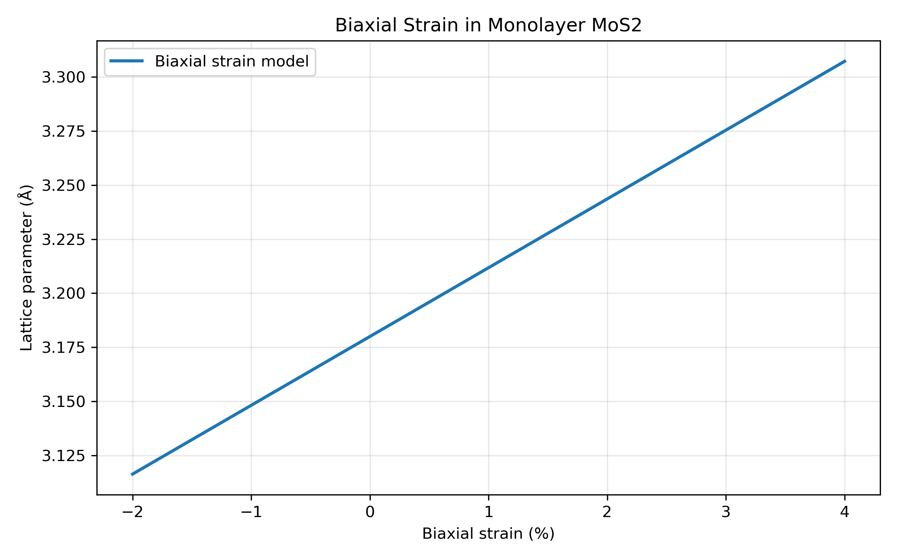

1. Problem Statement
Consider a monolayer of molybdenum disulfide (MoS₂) with an initial in-plane lattice parameter of 3.18 Å.
Apply uniform biaxial strain from -2% to +4%. Calculate the strained lattice parameter and visualize its dependence on strain.
Learning Objectives
- Understand biaxial strain in 2D crystals.
- Derive the strained lattice parameter.
- Implement the model using Python.
- Interpret the numerical results.
2. Mathematical Model
The engineering strain is defined as
\[ \varepsilon = \frac{a-a_0}{a_0} \]Rearranging for the strained lattice parameter gives
\[ a(\varepsilon) = a_0(1+\varepsilon) \]Here, \(a_0 = 3.18\,\text{Å}\) is the unstrained lattice parameter.
For 2% tensile strain, \(\varepsilon = 0.02\):
\[ a = 3.18(1+0.02) = 3.2436\,\text{Å} \]3. Numerical Results
The lattice parameter of monolayer MoS₂ was calculated for biaxial strain values ranging from -2% to +4%.

4. Discussion
The calculated lattice parameter increases linearly with increasing tensile biaxial strain. conversely, it compressive strain decreases the lattice parameter.
This behaviour follows directily from the geometric relationship:
\[ a(\varepsilon) = a_0(1+\varepsilon) \]At 2% tensile strain, the lattice parameter increases from 3.18 Å to 3.2436 Å. At -2% compresseive strain, it decreases to 3.1136 Å.
Limitations
This exercise uses a simplified geometric model and does not include atomic relaxiation, electronic structure calculations, or excitonic effects.
Future Work
Future inve=stigations could use density functional theory (DFT) to calculate relaxed atomic structures and investigate strain-dependante electronic properties.
5. Source Code
This exercise was implemented in Python using NumPy and Matplotlib.
The source code calculates the strained lattice parameter and generates the corresponding scientific plot.
Download Python Script